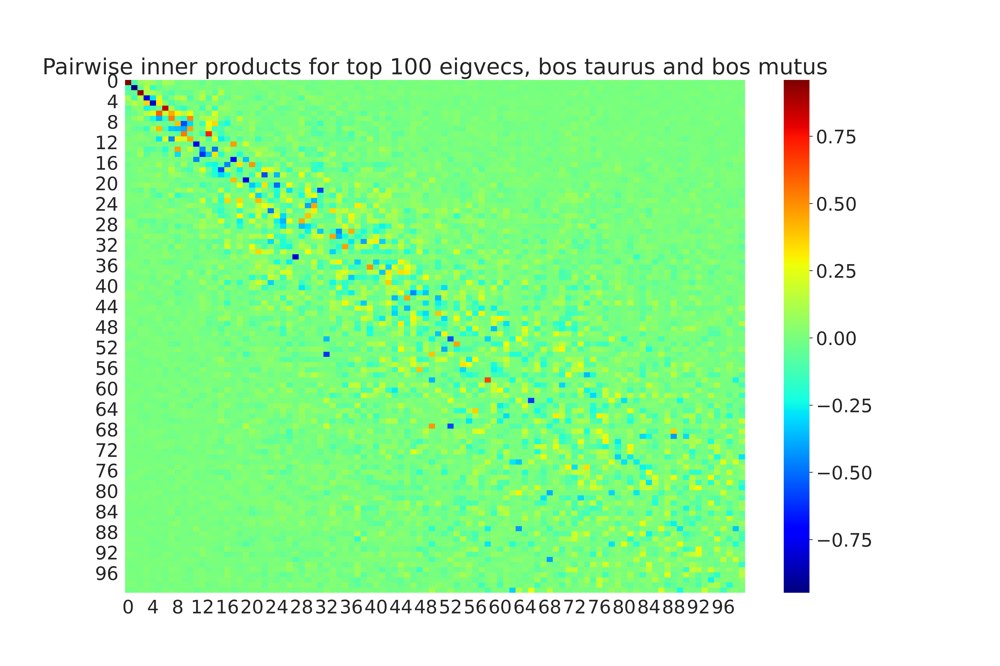
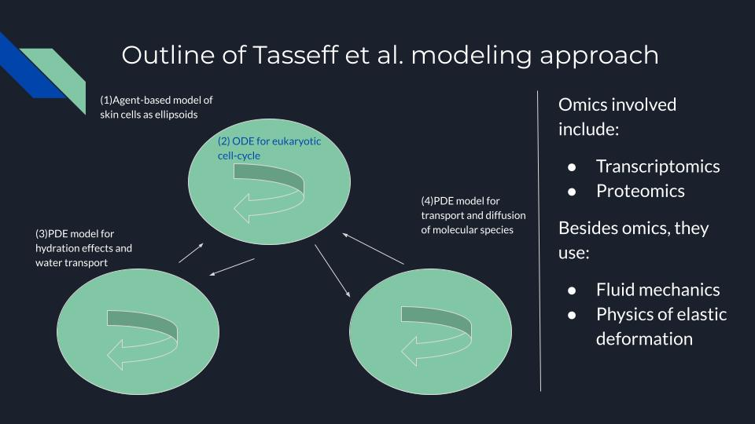

This page lists some of my work on alternative proteins.
Bioprocess Optimization Paper at IFPAC Global 2024
I will present my paper, Model-Based Control in Cultivated Meat Cell Cultures through Raman Spectroscopy, at IFPAC (International Foundation for Process Analytical Chemistry) Global 2024. The work is joint with Kai Hoeffner, my former supervisor at Ark Biotech. We used machine learning and feedback control to accelerate cultivated meat scale-up through bioprocess optimization. As the title suggests, the optimization algorithm hinges on Raman spectroscope measurements. See this page for more details after the conference.
Figure taken from this article.
Survey Article: In Silico Alternative Proteins
I have written a brief and informal survey article on some important, concrete problems in alternative proteins that require expertise in the
Biological Network Inference via Graph Transfer Learning
In systems biology, biological networks are used to describe a diverse range of organism behaviors such as metabolism, gene expression, etc. For example, protein interaction networks are crucial tools for understanding the interaction of a cell line with candidate growth factors and recombinant proteins in a culture. However, these network data are missing or incomplete for many cell lines of interest, such as bos taurus. Therefore, we augment protein interaction data using graph transfer learning algorithms. These algorithms leverage information about protein interaction networks for better-studied cell lines (such as homo sapiens or CHO) to infer interactions for the true cell line of interest.
Caption: We compare 300 nodes that are well-aligned in the protein interaction networks of both homo sapiens and bos taurus (cattle). Note that the true networks are much larger. The STRING functional protein database contains dense information about the interactions of these 300 proteins for both species; therefore, we can ''align'' the algorithm to learn differences in those regions, and then infer interactions in less-understood parts of the bos taurus proteome. 
Caption: In the figure, we show an example comparing top 100 eigenvectors of Bos mutus and Bos taurus. Inner product of 1.0 indicates maximal alignment, while -1.0 indicates maximal disalignment. We can think of the scores as roughly measuring correlations between clusters in the network.
Github Repository
In addition to learning from the differences in network data, algorithms should leverage prior knowledge of the differences between species so as to not overfit proteomic data. A promising approach is to use phylogenetic tree distance as a starting point for the transfer learner. In technical terms, phylogenetic information can parametrize a Bayesian prior for the distribution shift between the proteomes of different species.
Talk: Multi Omics Data Analysis at the CMMC

Bioinformatics is a powerful tool for cultivated meat and alternative proteins development. Multi-omics approaches integrate data from multiple distinct biological systems (e.g. genomics, transcriptomics, metabolomics) to obtain a more integrated and holistic model of the biological system at hand. In this short talk, I discuss a recent paper by Tasseff et al. (2019) on skin modeling using multi-omics datasets. The model combines differential equations and agent based models for water transport, molecular diffusion, and the cell cycle.
Next, I discuss the famous techno-economic analysis (TEA) of David Humbird on scale-up economics for cultivated meat. I argued that the limitations Humbird identified to scale-up, such as metabolic inefficiency, motivate the need for multi-omics modeling in cultivated meat. Finally, I discuss some specific examples of omics datasets that will be needed for this task, including proteomics, genomics, and metabolomics.
[Powerpoint slides (PDF)]
Short Article: A Small-Data Approach to Machine Learning in Cellular Agriculture
Mega-scale machine learning algorithms such as ChatGPT and AlphaFold are well known to the public. But these algorithms require millions of data points to train, while cellular agriculture practitioners would be lucky to have a few hundred for any particular task. Moreover, such data may come from heterogeneous sources, have missing fields, and be subject to observational noise. In this short article written for the CMMC, I argue that a different class of machine learning techniques, drawing on active learning and sequential optimization, can nevertheless have a huge impact on cellular agriculture. Indeed, they already have, and I cite several academic publications to this effect.[PDF]